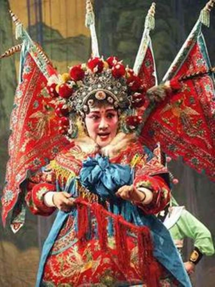
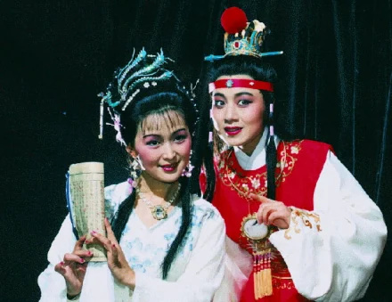
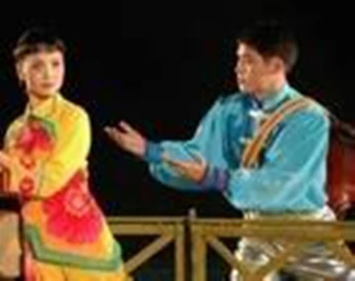

Experience the captivating world of Huaibei's traditional theatrical heritage
The Flower Drum Opera (Huagu Xi) is the most beloved performing art form in Huaibei, with roots stretching back over two centuries. Originating from folk songs and dances of the rural Huai River basin, this vibrant art form combines singing, acting, acrobatics, and musical instrumentation into a captivating theatrical experience.
Performances are characterized by their energetic drum rhythms, colorful costumes, and expressive storytelling. The operas typically depict stories of everyday life, historical legends, and moral tales, making them accessible and engaging for audiences of all backgrounds. Flower Drum Opera was officially recognized as a national intangible cultural heritage, ensuring its preservation for future generations.

Bangzi Opera, named after the wooden clapper (bangzi) that provides its distinctive rhythmic foundation, is a powerful and dramatic theatrical form that has deep roots in Northern Chinese culture. The resounding bangzi rhythms drive the performance forward, creating an intense and emotionally charged atmosphere.
This art form is known for its forceful vocal techniques, elaborate stage combat sequences, and rich musical arrangements featuring traditional Chinese instruments. The stories often draw from classical literature, historical events, and legendary tales of heroism and romance, delivering performances that are both culturally significant and thoroughly entertaining.

Sizhou Opera is another important traditional opera form with significant presence in the Huaibei region. Originating from the Sizhou area along the Huai River, this art form is characterized by its melodious singing style, graceful movements, and intricate costume designs that reflect the aesthetic sensibilities of the Huai River cultural sphere.
Unlike the more vigorous Bangzi Opera, Sizhou Opera places greater emphasis on lyrical expression and emotional nuance. The musical accompaniment features a blend of string and wind instruments that create a hauntingly beautiful soundscape. Performances often explore themes of love, loyalty, and the human condition through stories that resonate across time and culture.